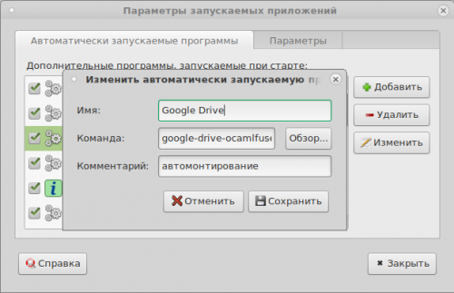

Подключение к Google Drive в Debian Stretch
10.02.2018 Информатизация в школе 0 Комментариев debian, Google, Google Classroom, Google Drive, linux
VKTelegramWhatsAppFacebookMessengerTwitterMail.RuOdnoklassnikiEmail
Среди великого множества облачных хранилищ, предлагающих свои услуги — Google Drive является одним из наиболее популярных. Однако официальная программа-клиент от разработчиков для установки на персональный компьютер доступна только для ОС Windows и Mac OS.
Проблема возникала после того, как мне понадобилось подключится к Google Drive для проверки работ учащихся отправленных при помощи Google Classroom с машины, работающей под управлением Debian Stretch. Это были файлы с расширением pas и скачивать их на свой ПК было не совсем удобно.
Утилита google-drive-ocamlfuse
Оказалось, что эта задача решаема. Существует сторонний клиент google-drive-ocamlfuse. Клиент позволяет осуществить подключение облачному хранилищу путем монтирования:
При попытке установить утилиту google-drive-ocamlfuse я столкнулся с тем, что репозиторий предназначен для ОС семейства Ubuntu (Mint и т.п.). Однако и это не проблема. Установим пакет python-software-properties, он позволит нам подключать репозитории Ubuntu:
#apt-get install software-properties-common
После этого добавляем репозиторий с утилитой software-properties-common:
#add-apt-repository ppa:alessandro-strada/ppa
И обновляем индексы:
#apt-get update
Установка и настройка google-drive-ocamlfuse
Теперь мы можем смело устанавливать google-drive-ocamlfuse и приступать к монтированию.
#apt install google-drive-ocamlfuse
Создаем директорию для монтирования Google Drive. Это можно сделать двумя способами:
$mkdir ~/google-drive
Директорию я назвал google-drive.
Теперь в терминале выполним команду для монтирования диска:
$google-drive-ocamlfuse ~/google-drive/
После выполнения команды будет запущен браузер на странице, где Вам необходимо будет ввести свои учетные данные и разрешить подключение:
После проделанных процедур, запускаем файловый менеджер и продолжаем работу уже на Google Drive
Для того, чтобы диск монтировался автоматически при загрузке ОС, добавим команду google-drive-ocamlfuse ~/google-drive/ в автозапуск. В Mate это Система — Параметры — Персональные — Запускаемые приложения:
Нажимаем кнопку «Добавить» и вводим команду и название:

Для того, чтобы произвести процедуру отключения диска необходимо выполнить команду:
$fusermount -u ~/google-drive